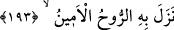

204. (Durmadan mucize talebiyle) onlar bizim azâbımızı mı çarçabuk istiyorlar?
205. Ne dersin! Eğer biz onları yıllarca yaşatsak.
206. Sonra tehdit edilmekte oldukları (azap) başlarına gelse!
207. Faydalandırıldıkları nimetler onlara hiç yarar sağlamayacaktır.
208. Bununla birlikte hangi memleketi helak ettikse muhakkak onu uyarıcı
(peygamberleri) olmuştur.
209. (Onlar) ihtar edilmiştir ve biz zâlim değiliz.
210. O’nu (Kur’an’ı) şeytanlar indirmedi.
211. Bu onlara düşmez; zaten güçleri de yetmez.
212. Şüphesiz onlar, vahyi işitmekten uzak tutulmuşlardır.
213. O halde sakın Allah ile beraber başka ilâha kulluk edip yalvarma, sonra azap
edilenlerden olursun!
Muhakkak ki o (Kur’an) âlemlerin Rabbinin indirmesidir. “O” zamîri, her ne kadar
daha önce zikri geçmemiş olsa da bilindiği için Kur’ân’a râci’dir. Teksîr sıygası
(Kur’ân’ın çok indirildiğini bildiren “__WORD__ kelimesi), yirmi üç sene süresince
Kur’ân’ın nüzûlünün defalarca olduğuna delâlet eder. Bu kelime, mef’ul mânâsında
masdardır. Mübâlağa ile Kur’ân’a bu isim verilmiştir.
Allah Teâlâ’nın “âlemlerin Rabbi” diye vasfedilmesi, Kur’ân’ın indirilmesinin Allah
Teâlâ’nın terbiyesinin ve herkese şefkatinin hükümlerinden olduğunu bildirmek içindir.
Mânâ şöyledir: Zikredilen bu yedi kıssayı da içine alan Kur’an, Allah Teâlâ
tarafından indirilmiştir. Aksi halde senin onları haber vermeğe gücün yetmezdi. Böylece
peygamberlik iddiândaki sadâkatin sâbit oldu. Çünkü bu gibi kıssaları haber vermek
ancak vahiy yoluyla mümkündür.
193. Onu Rûhu’l-emîn (Cebrail) indirdi.
“Onu Rûhu’l-emîn” yâni Cebrâil “indirdi.” veya Cebrail (a.s.) Kur’ân ile indi.
Çünkü o Allah’ın vahyinin emîni ve onu Allah’ın peygamberlerine ulaştırıcıdır. Ona
“Ruh” diye isim verilmesi, mükelleflerin kalblerinin ma’rifet ve tâat nuruyla hayat
bulmasına sebep olduğu içindir. Çünkü cehâlet ölümüne göre hayat demek olan vahiy
Cebrail (a.s.) vasıtasıyla olur. Allah Teâlâ’nın şu sözü de buna delâlet eder:
“Emrinden olan Ruhu kullarından dilediğine indirir.” (Gâfir, 40/15)
Keşfü’l-esrâr’da der ki: “Cebrail (a.s.)’a “Ruh” diye isim verilmiştir. Çünkü cismi
latif ve ruhânî bir ruhtur. Kezâ diğer melekler de rûhânî varlıklar olup ruhtan